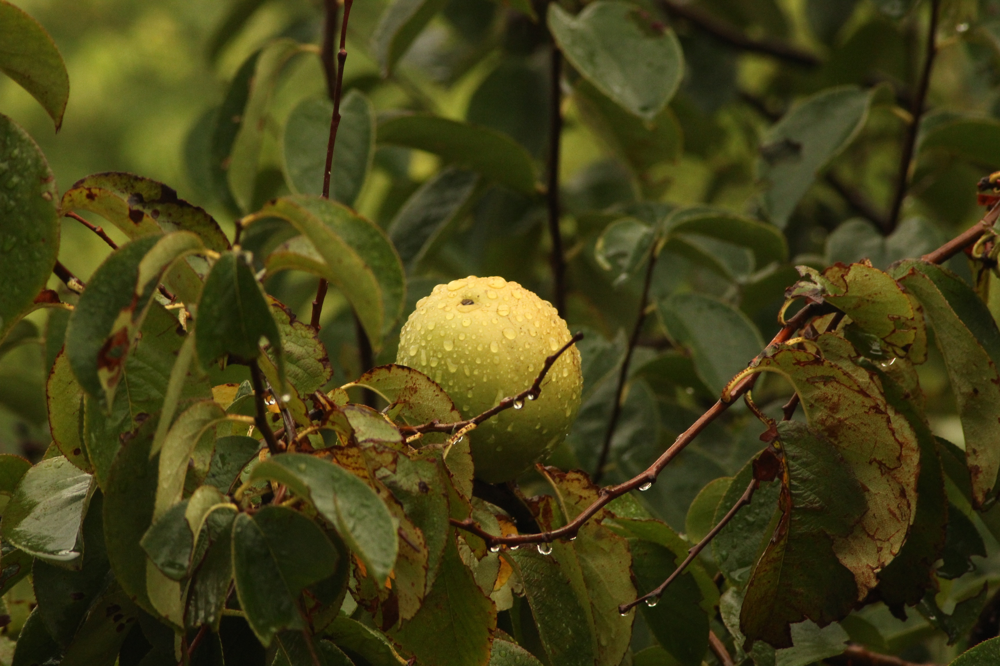

I like guava juice. Juicy guava is the best fruit ever. Mango and guava are best friends. it's very important relationship.
열매는 공 모양 또는 달걀을 거꾸로 세운 모양이며 길이 5∼12cm, 지름 5∼7cm이다. 연한 붉은빛으로 익고 향기를 풍기며 작고 단단한 종자가 여러 개 들어 있다. 과육은 즙이 많고 달콤하며 비타민을 많이 함유하고 있다. 날로 먹거나 통조림·과바젤리·과바치즈·잼 등의 원료로 쓴다.
재배하기 쉽고 기온 및 토양 조건에 대한 적응 범위가 비교적 넓으나 열대에서 아열대의 중간 조건이 가장 적당하다. 번식은 눈접 또는 종자로 한다. 아메리카 열대지방 원산의 재배식물로 아열대에까지 널리 분포되어 있다.
[네이버 지식백과] 구아바 [guava] (두산백과)
